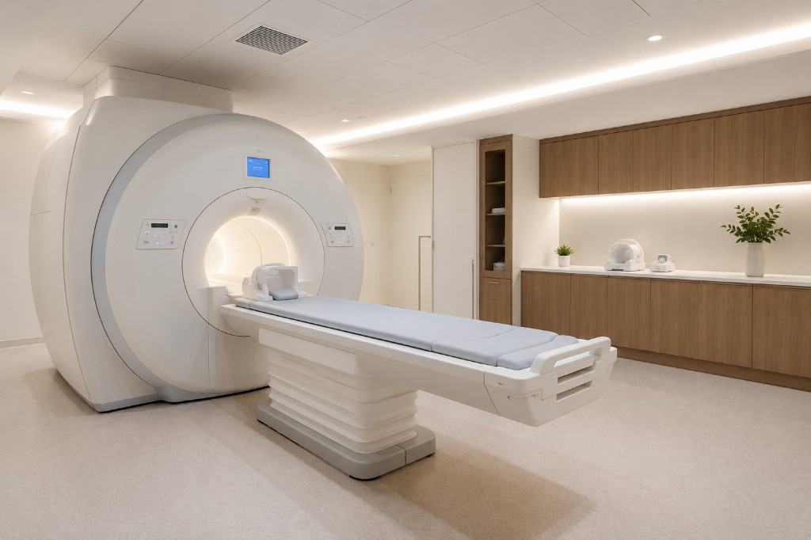

ホームページを公開しました
Usui Neurosurgery & Headache Clinic
頭痛から脳卒中予防まで。
専門的な脳の診療を、
もっと身近に。
Scroll

Usui Neurosurgery & Headache Clinic
| 月 | 火 | 水 | 木 | 金 | 土 | 日祝 | |
|---|---|---|---|---|---|---|---|
| 午前 9:00–12:30 |
● | ● | ● | ● | ● | ● | — |
| 午後 14:00–18:00 |
● | ● | — | ● | ● | — | — |
※ 水曜午後・土曜午後・日祝は休診
地図を挿入
必要に応じてMRIなどの画像検査を行い、
症状の背景にある原因を丁寧に確認します。
専門性と相談しやすさの両方を大切にしています。

脳神経外科専門医が直接診察を担当します。頭痛・めまいから脳の病気まで、専門的な視点で丁寧に対応します。
院内にMRI装置を完備しています。必要に応じてMRI検査を行い、脳の状態を画像で確認しながら丁寧な診断に努めます。
慢性頭痛の治療から脳ドックまで、幅広い症状に対応しています。小さな不安も、お気軽にご相談ください。
「大げさかな」と感じることでも、ためらわずにご来院ください。患者さんのペースに合わせた丁寧な説明を心がけています。
「この頭痛、ただの疲れだろうか」「最近、物忘れが増えた気がする」——そんな小さな不安が、受診をためらわせてしまうことがあります。
うすい脳神経外科・頭痛クリニックは、脳に関するどんな症状も、気軽に相談できる場所でありたいと考えています。脳神経外科専門医が丁寧にお話をうかがい、必要な検査・治療へと、一緒に考えます。
「大げさかな」と思っても、どうかそのままにしないでください。
片頭痛・緊張型頭痛・群発頭痛など、頭痛にはさまざまな種類があります。慢性的な頭痛に悩んでいる方、市販薬が効かなくなってきた方、急に強い頭痛が起きた方は、一度専門医にご相談ください。
ぐるぐると回る感覚、ふわふわした浮遊感——めまいには脳や内耳などさまざまな原因が考えられます。突然のめまいや、繰り返すめまいは、早めの受診をお勧めします。
手足のしびれは、脳や脊髄、末梢神経のはたらきと関係していることがあります。片側だけのしびれや、突然現れたしびれは、早めにご相談ください。
「最近、人の名前が出てこない」「同じことを何度も聞いてしまう」——加齢によるものか、認知症の初期なのかを、画像検査を含めて丁寧に鑑別します。早期発見が将来の生活の質に大きく影響します。
家族に脳卒中の既往がある方、高血圧や糖尿病をお持ちの方は、定期的な脳の検査をお勧めします。症状が出る前に発見できる未破裂動脈瘤や脳梗塞の前兆を、MRIで確認します。